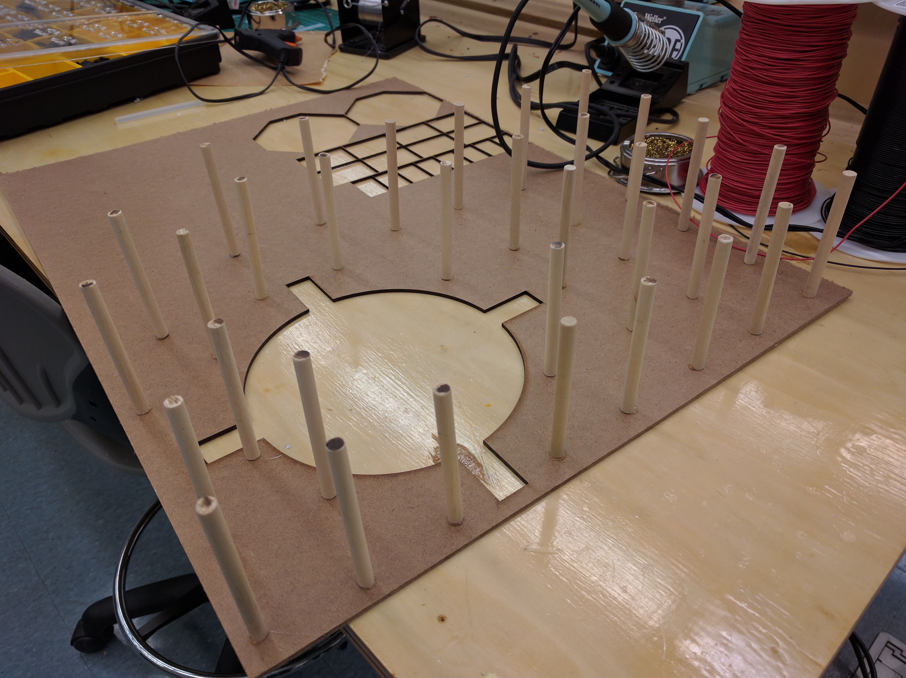

Step by Step: the Making of the Weird Clocks
1. Get snacks. This is going to take a while and snakes make everything better.
2. Laser cut the wood pieces. The CAD files are in the Gallery.
3. Bevel all of the wood sides, and cut dowels to appropriate lengths. Most of the bevels are 45 degrees (for right-angle joints), with a few at 15 and 30 degrees due to the dodecagon top of cake clock and the trapezoidal face of base clock. The dowels are the length of the PVC connector pieces between base clock and cake clock, as well as between cake clock and lighthouse clock (both of which are 3.5”).
If you don't want to bevel a bunch of wood by hand and you don't need it to look especially pretty, you can also use the toothed designs we originally cut with hardboard. You can find them in the gallery in the "Prototype CAD" folder under Laser Cutting/Engraving.
4. (Optional) - Sand all of the outer wood pieces (except for the ones with engraving). Use the medium coarse sandpaper first, and then the fine sandpaper. Wipe the sawdust off with a paper towel before staining.
5. Complete first stain on all outer wood pieces. We used polyurethane as our stain, but what you use depends mostly on personal preference. This includes the dowels. We highly recommend that you lightly hot glue the dowels to a piece of scrap wood or cardboard so that they stand on one end. This will make staining a lot easier. Use a foam brush and apply a thin layer of stain to everything. Make sure that there are no globs of stain.
{kind=link}
6. Get an Arduino. Download the software from the Arduino website. Run the Blink example code to make sure that it works. Then attach the motor shield.
7. Make the electrical stuff according to the circuit diagrams in the Gallery. On one proto board, put the circuit with the IR reflectance sensors. Make sure that all of the reflectance sensors are right on top of each other as this will be important for the rotary encoder. It's also important to make sure that the reflectance sensors are oriented correctly: the slightly blue side is an LED and the other side is a photodiode.

The other two protoboards are just used as rails for 5 Volts and ground. You can use solderless breadboards for this, but they are a bit bulky and the connections tend to come out easily. Testing the circuit on a breadboard first and then making it on a protoboard can be helpful.
8. Do the second stain on all the wood pieces.
9. If you haven’t already, take a break. You have been working hard. Don’t overdo it. Plus there isn’t anything else that we can do until the wood pieces are done.
10. Do the third stain. Wait at least an hour and a half for the stain to dry (or longer depending on the type of polyurethane that you bought).
11. Assembly Rotary Clock, Cake Clock, and the Lighthouse. Both are held mainly together by wood glue. Use clamps to secure the pieces as they dry, and put brackets on 90 degree corners of Rotary Clock for stability. However, on one side of Rotary Clock, use two hinges in the place of brackets, so that it is possible to open that side later on to access wires. You may need to use a bit of hot glue on Cake Clock and the Lighthouse to secure the sides while the wood glue dries. The wood glue is strong and will hold it together for a long period of time. The hot glue will act like a clamp while the wood glue has time to set. Leave the top of Rotary Clock unsecured for now. You may need that access point later.
12. Make the connections. The connection between Base Clock and Cake Clock is the most difficult. First, a piece of 2” PVC to be 3.5” long, and bandsaw rectangular holes in this tube that the distance sensors can fit through. Then, attach 4 evenly-spaced right-angle brackets unto each end of the PVC pipe (which will later screw into the clocks above and below that connector piece). Then glue the cut/stained dowels onto the PVC pipes, but DO NOT glue the dowels in the spaces covering the brackets (it will make them impossible to attach to the other clocks). Next, drill holes through the PVC and dowels for the LEDs. You should first then put the IR distance sensors into place. Run the white wire (output) up to cake clock and the red and black wires (5V and ground) down to to Rotary clock. Use electrical tape to secure the IR distance sensors into place. Then put the LEDs into place. They should sort of click into the holes drilled into the PVC. Make sure that the first LED is connected to the sensor that is attached to the A0 pin on the arduino, the second LED is above the sensor that is attached to the A1 pin on the Arduino, and the third LED is above the sensor that is attached to the A2 pin on the Arduino. The connector piece between Cake Clock and Lighthouse Clock has the same physical construction as the first connector (3.5” PVC with 8 brackets and dowels covering it), except without any holes for sensors.
13. Make the motor mounts. Lasercut the Rotary Clock motor mount according to the CAD file called “POE base clock motor mount assembly” in the Gallery. The table-like motor mount in the Cake Clock doesn’t need to be a particular size, but it needs to have legs 3” tall and a top 0.25” thick for a total height of 3.25”. Screw the motors into the motor mounts such that the shaft of each motor is at the center of its clock’s rotation. Screw the IR reflectance sensor circuit into the Rotary clock motor mount. Attach the Rotary motor mount so that the IR reflectance sensors are about a centimeter away from the front of Rotary clock. We recommend using hot glue to attach the motor mounts to the clock so that if you need to remove them, you can. Do not attach Cake Clock motor mount. It is going to be hard enough to do the wiring without a table covering the Arduino and the motor shield.
14. Attach the rotary encoder paper and the Rotary clock face to Rotary Clock. You may need to add some spacers so that the clock face doesn’t rub up against Rotary Clock.

Make sure that the rotary encoder paper is facing the rotary encoder circuit. Everything should be centered around the motor, not around the hole in the front of Rotary Clock.
15. Using the PVC connection with the LEDs and the IR distance sensors, connect Rotary Clock and Cake Clock.
16. Do the wiring for Rotary Clock. First solder the ground and 5V connections for the sensor LEDs, the IR distance sensors, and the IR reflectance sensors to a protoboard with 5V and ground rails. You are also going to want to put the entire pressure pad circuit on that protoboard. [PICTURE: 5Vgroundproto.jpg] (Here the yellow wires are the pressure pad circuit; it’s basically just one resistor so “circuit” might be pushing it). Then connect longer wires to the stepper motor in rotary clock. Run those wires along with the output wires on the IR reflectance sensors up to Cake Clock. Follow the circuit diagram to correctly put those wires into the pins on the motor shield and arduino.
17. Do the wiring for Lighthouse. First screw in the connector piece between lighthouse and Cake Clock to the lighthouse. Attach the LED to the top of lighthouse so that it is in the hole in the top of the lighthouse. Secure with electrical tape.


Then put the servo in the lighthouse and attach longer wires to the servo connector. Run those through through the connection piece and through the holes on the top piece of Cake Clock. Then attach the connection piece to the top of cake clock. Secure those wires with electrical tape to the top of cake clock, and run the wires down the right side of cake clock (I am assuming that the door is facing you).
18. Do the wiring for Cake Clock. Attach the animal LEDs in a circle on the bottom of Cake Clock.


Then create two sets of three wires (signal, 5V, and ground), all with female crimp connections on one end. These are for connecting the Servo and the LED in Cake Clock. Attach the 5V and ground pins of all of those wires to the second rail protoboard. Then solder long 5V and ground wires to the protoboard and run them down to rotary clock and attach them to the rail protoboard down there. Make a 5V and ground wire with male crimp connections on one end. Put the crimp connections into the 5V and ground pins on the arduino and solder the other end to the protoboard in cake clock. Congratulations, your entire project should now be powered! Then attach longer wires to Cake Clock motor. Attach everything to the Arduino that hasn’t been attached already.
19. Make the power cable. Wind together a wire that contains 2 sets of 5V and ground wires. On one end, screw both sets into a female barrel jack connector. On the other end, screw one set into a male barrel jack connector, and screw the other two wires into the motor shield. If the code is already on the arduino, plug the male barrel jack into the arduino. Run the other end through the connector down to Rotary clock and out the slot in the corner of the door on Rotary clock. DO NOT plug this into the power supply yet. You do not want to be building stuff while your circuit is live.
20. Attach the table motor mount to Cake Clock. Do this with hot glue so that you can take it off if you need to.
21. Attach the animals to the inner drum of cake clock. Make sure that the bottom of the animals doesn’t touch the outer drum. Hot glue is the best substance for this as well.
22. Place the top of cake clock with the lighthouse attached unto the table/motor of the bottom of cake clock. Make sure everything is level.
23. Make the tube and supports for the surprise to launch out of. Take a piece of 1” diameter PVC and cut it so that its length is the width of the Lighthouse. Then sand down one end of the tube so it can rest flush against the angled sides of the Lighthouse. Create two rectangular support pieces for the tube to rest on at either end. The back support piece should be 2.5” tall and the front support piece where the surprise launches out should be 3” tall. Cut a 1” diameter semicircle out of the top of each piece so the PVC tube can rest on the support pieces. Glue the support pieces into the Lighthouse.
24. Set up the outside of the servo actuation system. Mount the servo on a 0.5 inch block (or a block of a size such that the servo motor shaft is 2 inches above the bottom of the Lighthouse). Make a lever arm that attaches onto the motor shaft which extends 2 inches beyond the motor shaft. Place the servo assembly against the back of the Lighthouse (against the back support piece). Mark where the lever arm contacts the PVC tube, and then take the tube out and cut a slot at that place at least wide enough so that the lever arm can fit in. After checking that the lever arm is able to go into the slot in the PVC tube, glue down the motor assembly and the tube to fix them in place.
25. Set up the inside of the servo actuation system. Once the tube and supports are in place, take a piece of cord a few inches longer than the width of the lighthouse and drill a hole that can fit it in the back of the lighthouse where the center of the tube is. Thread it through the entire tube so that there is a piece at the back with a handle (either a knot or a handle knotted to the cord) and so that the front piece is sticking out the front of the tube. Take a compression spring with a resting length of about 3” resting length and 3/4” diameter. As long as the spring compresses to fit in the back half of the tube, it will be fine. Put that string on the cord through the tube. Take the disk you lasercut that is as wide as the inner diameter of the tube (so that the disk can slide back and forth through the tube and knot the cord at the front ot the disk so that pulling the cord pulls the disk along the tube and compresses the spring. Test the servo mechanism by pulling the cord back and moving the lever arm up so that the spring is held in, then loading in a makeshift surprise (anything not overly dangerous to launch that fits in the tube) into the tube in front of the lever arm, then moving the lever arm away so that the spring expands and pushes the surprise out of the tube. Be careful not to hit anyone with the makeshift surprise.
26. Make a small surprise to launch out of the lighthouse. If you want to make a Kraken the guide for making a large one can be found here. The small one that we used to launch out of our project is just a scaled down version of that one. Don’t stuff or add eyes to the small kraken, as they will make kractuation more difficult.

27. Go to your local dump, and find some nice stuff to attach to the outside of your project. Maybe pick up some other cool stuff for yourself. This completes the aesthetic.
28. Your puzzle is now complete. Have fun with it!